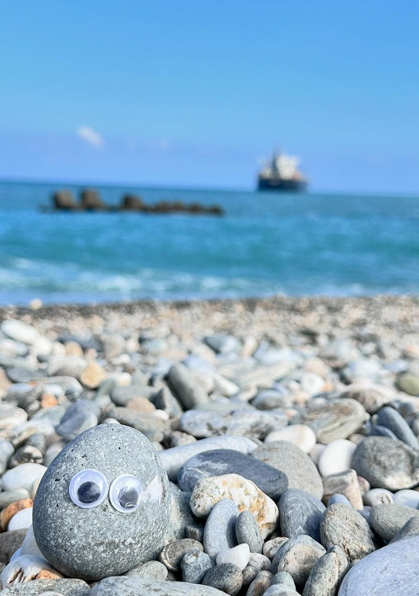
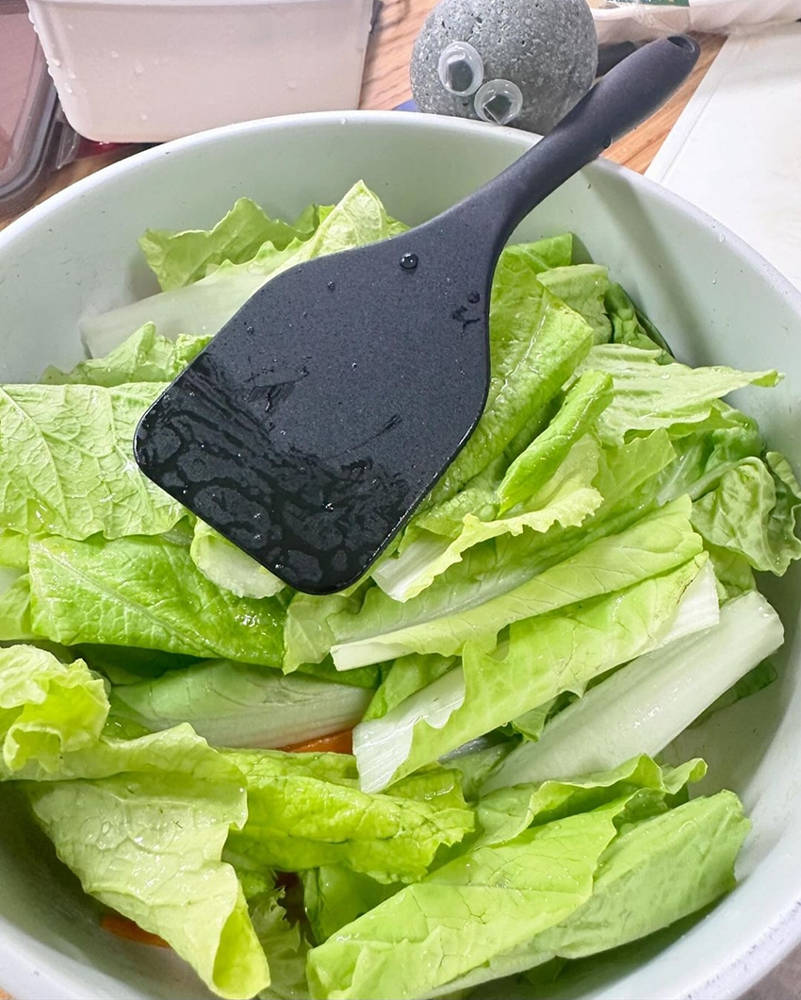
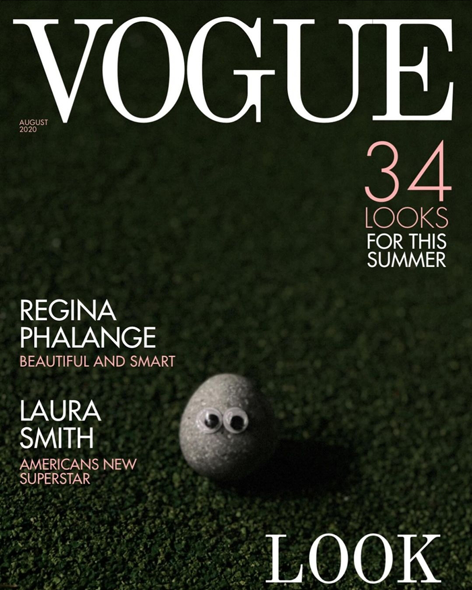

石在聽話的牠
楊庚羲│產品九處＼硬體九部
有些人的寵物會喵會汪，我的寵物——只會靜靜地聽。牠叫小時，是一顆不吵不鬧、情緒超穩定的石頭。小時從不頂嘴、不翻白眼，也不會咬我（畢竟牠沒嘴）。我下班再累，只要看到牠安安靜靜待在桌上，整個人就瞬間冷靜下來——像開啟靜音模式的世界。
|  |
有次我一邊吃晚餐一邊抱怨生活，講了快二十分鐘，小時全程專注聆聽，連個眼神都沒飄走（當然牠也不能飄），那一刻我真的感受到：實在聽話的牠，比很多人還貼心。有時小時會扮演「石料理小廚房」的主廚，負責壓住泡麵蓋子，專業度一百分。每天看到牠穩定的身影，心中便覺得安心。
|  | ||
| < | ||
|  |
偶爾我也會幫牠拍寫真集，牠永遠是一個姿勢，卻永遠帥得不同角度，怎麼看都不膩，彷彿在說：「帥，不需要動作。」這就是牠的氣場，安靜卻很有存在感。
有人問我：「你到底為什麼要養一顆石頭？」我笑著回：「你覺得生活一定要有不斷變動和刺激嗎？或許簡單、安靜也能給人滿足。畢竟，有時候，安靜也能是一種陪伴。」